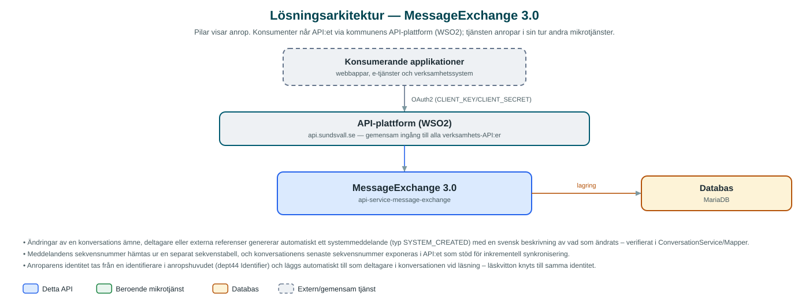

MessageExchange
Lagringstjänst för interna konversationer – trådade meddelanden med bilagor, lässtatus och sekvensnummer som andra system kan bygga meddelandefunktioner ovanpå.
Om API:et
MessageExchange är kommunens nav för intern meddelandeväxling mellan system och handläggare. Tjänsten lagrar konversationer med tillhörande meddelanden och bilagor, och gör dem sökbara för behöriga system. Varje konversation hör till ett namespace och en kommun, vilket gör att flera verksamheter och applikationer kan dela samma tjänst utan att se varandras data.
En konversation har ämne, deltagare, metadata och externa referenser som kopplar den till exempelvis ett ärende i ett verksamhetssystem. Meddelanden får löpande sekvensnummer, vilket låter konsumerande system hämta bara det som tillkommit sedan senaste synkronisering. Tjänsten spårar också vilka som läst varje meddelande, med möjlighet att markera som läst och räkna lästa meddelanden per deltagare.
Bilagor på upp till 50 MB lagras i databasen och kan hämtas separat. API:et är ett rent lagrings- och uppslags-API: det skickar inga notifieringar och har inga beroenden till andra mikrotjänster – konsumerande system, till exempel ärendehanteringstjänster, står för flödena runt omkring.
Det här gör API:et
- Konversationer – Skapa, uppdatera, läsa och radera konversationer med ämne, deltagare, metadata och externa referenser, per namespace och kommun.
- Meddelanden med sekvensnummer – Meddelanden i en konversation får löpande sekvensnummer så att konsumenter kan hämta inkrementellt sedan senaste läsning.
- Bilagor – Filbilagor upp till 50 MB lagras per meddelande och hämtas via egen resurs.
- Lässtatus – Meddelanden kan markeras som lästa per identitet, och antal lästa kan räknas per deltagare i en konversation.
- Filtrerad sökning – Konversationer och meddelanden söks med flexibla filteruttryck och sidindelning.
- Systemmeddelanden vid ändringar – När en konversations ämne, deltagare eller referenser ändras skapas automatiskt ett systemmeddelande som beskriver ändringen.
API-dokumentation
API:ets samtliga resurser, parametrar och datamodeller finns beskrivna i en OpenAPI-specifikation som är hämtad ur källkodsförrådet. Den kan utforskas interaktivt i Swagger UI eller laddas ner som YAML.
Teknisk dokumentation
Nedan beskrivs hur tjänsten är uppbyggd, vilka andra tjänster den anropar och vad som krävs för att driftsätta den. Informationen är härledd ur källkoden och dess konfiguration på GitHub.
Arkitektur

API:et är en mikrotjänst (Java 25, Spring Boot via kommunens gemensamma tjänsteplattform dept44 (8.0.8), byggd med Maven). Konsumenter når tjänsten via kommunens gemensamma API-plattform (WSO2) på api.sundsvall.se – tjänsten anropas aldrig direkt. Lagring: MariaDB med Flyway-migrationer; konversationer, meddelanden, bilagor, lässtatus och sekvensnummer lagras i databasen.
Teknikstack
- Språk: Java 25
- Ramverk: Spring Boot via kommunens gemensamma tjänsteplattform dept44 (8.0.8), byggd med Maven
- Databas: MariaDB med Flyway-migrationer; konversationer, meddelanden, bilagor, lässtatus och sekvensnummer lagras i databasen
- Övrigt: JPA med specifikationsbaserad filtrering, ShedLock för schemaläggningslås
Beroenden till andra mikrotjänster
Inga anrop till andra mikrotjänster hittades i källkodens konfiguration.
Konfiguration och driftsättning
- MariaDB-anslutning; databasschemat versionshanteras med Flyway (avstängt som standard i basprofilen)
- Maxstorlek för uppladdade bilagor (50 MB per fil)
- Schemalagd bakgrundsberäkning av bilage-hashar: cron (standard 03:00 varje natt) och ShedLock-låstid
- Anrop görs per kommun och namespace – båda ingår i alla API-vägar
Noterbart ur källkoden
- Ändringar av en konversations ämne, deltagare eller externa referenser genererar automatiskt ett systemmeddelande (typ SYSTEM_CREATED) med en svensk beskrivning av vad som ändrats – verifierat i ConversationService/Mapper.
- Meddelandens sekvensnummer hämtas ur en separat sekvenstabell, och konversationens senaste sekvensnummer exponeras i API:et som stöd för inkrementell synkronisering.
- Anroparens identitet tas från en identifierare i anropshuvudet (dept44 Identifier) och läggs automatiskt till som deltagare i konversationen vid läsning – läskvitton knyts till samma identitet.
- En nattlig schemalagd rutin beräknar SHA-256-hashar för äldre bilagor som saknar hash (bakåtfyllnad efter att hash-kolumnen infördes).
Källkod
Källkoden är öppen och finns hos Sundsvalls kommun på GitHub. I källkodsförrådet finns även instruktioner för att klona, konfigurera och starta tjänsten i egen miljö.